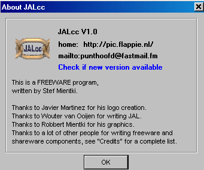
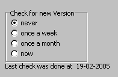
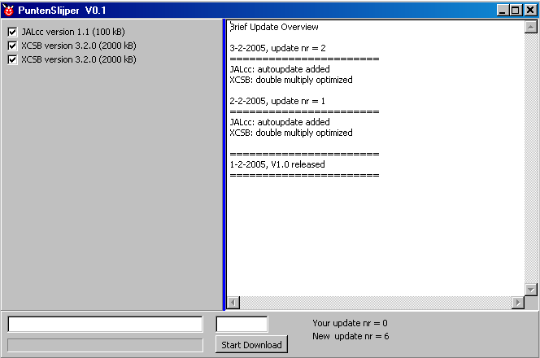

august, 2006
History & Download
|
Future Updates
In the about box, you can click on - the webaddress, to go JALcc homepage - the mailaddress, to send an email - check for new version, to check and download a new version (checking for a new version can also be automatically) |
 |
target platform: win95 / win98 / winME / winNT / win2000 / win XP
|
(15 MB) |
including JAL V2.1 compiler and lots of TI enhancements |
|
(15 MB) |
DON'T use this version for JAL, because demos and libraries are not compatible !! NOTE: for TI, you must allow to install JAL, because only then you get the TI-code table, sorry for this bug in the install file. |
|
(15 MB) |
Full support of JAL v2 |
Installation
Download the installation file in some temporary directory and then execute it. Although some of the supported compilers don't except long filepaths and/or spaces in the filepaths, JALcc takes care about this issue. So you can install JALcc for example in "C:\PROGRAM FILES\JALCC" and JAL and PICbsc will still work correctly.
To install, just run the setup file (clean installation, files are only placed in the directory of your choice, no changes of the registry or whatsoever, except inno installer set some flags to properly uninstall)
To uninstall, run unins000.exe, then delete the directory (to remove files that were changed by the user).
In the complete installation package of JALcc, JAL, PICbsc and all their related files are installed just as they are in the orginal package. Therefor Installing a new compiler version is very simple, just unpack / overwrite everything, starting in the correct directory.
Checking for new Versions
The program can automatically check for new versions (not only for the program itself, but also for the included compilers).
Through the mainmenu item Settings /

Another way of manual checking for updates, is through the about window:
After starting and confirming the download, JALcc will be closed and the program "PunterSlijper" will be launched. Puntenslijper will download the files and store them in the correct places. After PuntenSlijper has finished, it will launch JALcc again (with the same parameters as it was closed).

Bug reports
If you find any bugs, omissions or have suggestions, please send me an email.
For bug reports, sending an email should preferably be done through the mainmenu "help / send bug report". Sending an email in this way, will attach the programs inifile and the Eureka error logfile, which will help me to locate and hopely solve the problem.
History
|
Things that won't be realized (at least are not to be expected in the near future) |

|
Ideas and bugs to fix in next version(s) |
 new:Wysiwyg editor for html / rtf , with highligted code insertion
new:Wysiwyg editor for html / rtf , with highligted code insertion
 new:Video viewing
new:Video viewing
 new:Presentation mode
new:Presentation mode
 new:Flowchart drawing
new:Flowchart drawing
 new:Flowchart codegeneration
new:Flowchart codegeneration
 new:VeroBoard design
new:VeroBoard design
 new:Simple schematic drawing
new:Simple schematic drawing
 new:Report Generation
new:Report Generation
 new:Website Generation
new:Website Generation
 new:Website Verification
new:Website Verification
 new:Graphical calculator
new:Graphical calculator
 new:DXF, ... viewer
new:DXF, ... viewer
 new:AutoIt codeeditor
new:AutoIt codeeditor
 new:Backup facility
new:Backup facility
 new:Binary file compare
new:Binary file compare
 new:Open Explorer from item in document-tree
new:Open Explorer from item in document-tree
 new:Wysiwyg editor, store current caret in some html tag
new:Wysiwyg editor, store current caret in some html tag
 new:formatting, keep caret / selection (settings changed)
new:formatting, keep caret / selection (settings changed)
 new:sub/super/vector glypg dynamisch zetten (key caption door user)
new:sub/super/vector glypg dynamisch zetten (key caption door user)
RTF altijd styleset 1 ???
 change:
change:
 improvement:Better image editor
improvement:Better image editor
Tweede keer moeizaam,full size via scrolling of gewoon full size, OF via diagram ??
 improvement:CodeEditor, hold caret position while switching macro expansion
improvement:CodeEditor, hold caret position while switching macro expansion
 improvement:CodeEditor, object treeview, keep expansion points after regeneration
improvement:CodeEditor, object treeview, keep expansion points after regeneration
 bug:
bug:
 new: add current active document to tree, just above current tree selection
new: add current active document to tree, just above current tree selection
 new: backup facility, subversion + turtoise ?
new: backup facility, subversion + turtoise ?
 new: edit button in general viewer
new: edit button in general viewer
 new: code folding in code editor
new: code folding in code editor
 new: html background color only from template and always to CSS
new: html background color only from template and always to CSS
|
Intermediate versions, see Bug Reports |
|
V 2.5xx released ... |
 new: Vector editor: Finite State Machine for JAL now uses the case statement
new: Vector editor: Finite State Machine for JAL now uses the case statement
 new: Signal WorkBench added
new: Signal WorkBench added
|
V 2.4xx released ... |
 bugfix: Code Editor, searching in some type of code editors, sometimes crashed
bugfix: Code Editor, searching in some type of code editors, sometimes crashed
 improvement: Wysiwyg Editor, paste Bitmaps (e.g. from (ALT-) print-screen ) are now translated into PNG, which are much smaller
improvement: Wysiwyg Editor, paste Bitmaps (e.g. from (ALT-) print-screen ) are now translated into PNG, which are much smaller
 new: Picture Manager, now supports also JPEGtran, which is much faster than ImageMagick
new: Picture Manager, now supports also JPEGtran, which is much faster than ImageMagick
 new: Picture Manager , button-actions can now also be done through single keys (see hints)
new: Picture Manager , button-actions can now also be done through single keys (see hints)
|
V 2.3xx released ... |
 bugfix: When editing complex or huge html files, in the wysiwyg editor, the program could consume all processor time (hangs).
bugfix: When editing complex or huge html files, in the wysiwyg editor, the program could consume all processor time (hangs).
 new: General Viewer, default extensions extended
new: General Viewer, default extensions extended
 new: General Viewer, pdf viewing added (through webviewer)
new: General Viewer, pdf viewing added (through webviewer)
 new: Wysiwyg Editor, scripts in html files are split from the html content and opened in a code editor.
new: Wysiwyg Editor, scripts in html files are split from the html content and opened in a code editor.
 new: Wysiwyg Editor, ctrl-LeftMouseClick on links will open an URL in the general viewer or start the email client
new: Wysiwyg Editor, ctrl-LeftMouseClick on links will open an URL in the general viewer or start the email client
 new: Wysiwyg Editor, "target" supported in <a href= ... target=...
new: Wysiwyg Editor, "target" supported in <a href= ... target=...
 new: Wysiwyg Editor, in inifile, you can specify auto save interval and auto save beep: [general] save_interval = <seconds>, save_beep = <0/1>
new: Wysiwyg Editor, in inifile, you can specify auto save interval and auto save beep: [general] save_interval = <seconds>, save_beep = <0/1>
 improvement: Wysiwyg Editor, vertical alignment of table cells can be set for all cells, by changing the setting of the topmost left cell in the table properties window.
improvement: Wysiwyg Editor, vertical alignment of table cells can be set for all cells, by changing the setting of the topmost left cell in the table properties window.
 improvement: Wysiwyg Editor, image editing now allows large images without scaling them down
improvement: Wysiwyg Editor, image editing now allows large images without scaling them down
 improvement: general, document list is now saved before the history list, which improves stability when widows is shutdown, while JALcc is active. It's now also possible the delete the lock-file from within the program.
improvement: general, document list is now saved before the history list, which improves stability when widows is shutdown, while JALcc is active. It's now also possible the delete the lock-file from within the program.
 improvement: Code Editor, if code tree is visible, F5 refreshes the code tree (was only available for TI84)
improvement: Code Editor, if code tree is visible, F5 refreshes the code tree (was only available for TI84)
 improvement: Code Editor, compiling starts faster and more reliable
improvement: Code Editor, compiling starts faster and more reliable
 improvement: Code Editor, bookmark clicking gives better focus to editor window
improvement: Code Editor, bookmark clicking gives better focus to editor window
|
V 2.2 released 28-11-2006 |
 changed: TI-Code Editor, single characters are no longer different showed in code
changed: TI-Code Editor, single characters are no longer different showed in code
 bugfix: Code Editor, after inserting templates, focus didn't always return to editor (weird windows MDI bug)
bugfix: Code Editor, after inserting templates, focus didn't always return to editor (weird windows MDI bug)
 bugfix: TI-Code Editor, "p" was not declared uppercase in code table, and JALcc ran into an error
bugfix: TI-Code Editor, "p" was not declared uppercase in code table, and JALcc ran into an error
 bugfix: TI-Code Editor, code table of 7E codes contained too much
bugfix: TI-Code Editor, code table of 7E codes contained too much
 bugfix: TI-Code Editor, space preservation at the end, through a ; didn't work correctly
bugfix: TI-Code Editor, space preservation at the end, through a ; didn't work correctly
 bugfix: TI-Code Editor, length of code could be slightly different due to length of program name
bugfix: TI-Code Editor, length of code could be slightly different due to length of program name
 bugfix: TI-Code Editor, "Pause" without a parameter (=without a space) wasn't handled correctly
bugfix: TI-Code Editor, "Pause" without a parameter (=without a space) wasn't handled correctly
 new: (not released) DataAcquisition module with realtime MatLab interface
new: (not released) DataAcquisition module with realtime MatLab interface
 new: VB-script Code Editor with X-setup decoding ???
new: VB-script Code Editor with X-setup decoding ???
 new: JavaScript Code Editor
new: JavaScript Code Editor
 new: TI-Code Editor, export source code to colored html pages
new: TI-Code Editor, export source code to colored html pages
 new: TI-Code Editor, code size reported when generating code
new: TI-Code Editor, code size reported when generating code
 new: TI-Code Editor, run selected (with uncommenting selected comment sections, and full procedure support)
new: TI-Code Editor, run selected (with uncommenting selected comment sections, and full procedure support)
 new: TI-code Editor: added list of used variables
new: TI-code Editor: added list of used variables
 new: TI-code Editor: procedures made possible
new: TI-code Editor: procedures made possible
 new: TI-code Editor: code optimization, can be switched of for a specific section, result visible in code
new: TI-code Editor: code optimization, can be switched of for a specific section, result visible in code
 new: TI-code Editor: warnings for use of GOTO, explicit IF functions
new: TI-code Editor: warnings for use of GOTO, explicit IF functions
 new: TI-code Editor: continuation character implemented, so lines can be split over more editor lines
new: TI-code Editor: continuation character implemented, so lines can be split over more editor lines
 new: Code Editor: Alt-F9 = run selected (if applicable)
new: Code Editor: Alt-F9 = run selected (if applicable)
 improvement: TI-code Editor: Code generation 4 times faster
improvement: TI-code Editor: Code generation 4 times faster
 improvement: Wysiwyg Editor: Spell-checker is now machine independent, if the right spell-checker is not available, JALcc looks for another spell-checker for the same language (without changing the settings).
improvement: Wysiwyg Editor: Spell-checker is now machine independent, if the right spell-checker is not available, JALcc looks for another spell-checker for the same language (without changing the settings).
|
V 2.1 released 18-08-2006 |
 bug fixed: Assembler post processor optimized too much
bug fixed: Assembler post processor optimized too much
 bug fixed: Helpfile could often not be found (also F1 added as shortcut to language help)
bug fixed: Helpfile could often not be found (also F1 added as shortcut to language help)
 improvement: Code Editor: pack all files in ZIP, now will also include the assembler file (special for Kyle)
improvement: Code Editor: pack all files in ZIP, now will also include the assembler file (special for Kyle)
 changed: Code Editor: ";;" ends a string item (needed for TI-highlighter, when using optimized code)
changed: Code Editor: ";;" ends a string item (needed for TI-highlighter, when using optimized code)
 bugfix: TI-code Editor: Newly created files contained nonsense.
bugfix: TI-code Editor: Newly created files contained nonsense.
 new: TI-code Editor: All codes are now read from a normal text file, so everyone can use his one translations.
new: TI-code Editor: All codes are now read from a normal text file, so everyone can use his one translations.
 new: TI-code Editor: Generated codes can be viewed together with the source code
new: TI-code Editor: Generated codes can be viewed together with the source code
 new: TI-code Editor: Pre-compile, with total error listing and jump into error location
new: TI-code Editor: Pre-compile, with total error listing and jump into error location
 new: TI-code Editor: added better examples / templates
new: TI-code Editor: added better examples / templates
 changed: TI-code Editor: comment need to to be placed at the beginning of a line
changed: TI-code Editor: comment need to to be placed at the beginning of a line
 changed: TI-code Editor: indentation is allowed and preserved
changed: TI-code Editor: indentation is allowed and preserved
 changed: INC2JAL, extended with LKR file, now generates all device dependent issues (all demos have changed accordingly)
changed: INC2JAL, extended with LKR file, now generates all device dependent issues (all demos have changed accordingly)
|
V 2.0 released 08-08-2006 |
 new: "Save as", will now add the newly created document automatically in the document list
new: "Save as", will now add the newly created document automatically in the document list
 bug fixed: Batch Launcher: if output was redirected to a non existing directory, launch failed
bug fixed: Batch Launcher: if output was redirected to a non existing directory, launch failed
 bug fixed: Access violation when opening an existing vector file
bug fixed: Access violation when opening an existing vector file
 bug fixed: JAL help file couldn't be reached
bug fixed: JAL help file couldn't be reached
 TODO: general, replace perform by post !!
TODO: general, replace perform by post !!
|
V 1.0.7xx intermediate release, only for TI-basic ... |
 bug fixed: Wysiwyg Editor: clicking on anchor list, sometimes produced an access violation
bug fixed: Wysiwyg Editor: clicking on anchor list, sometimes produced an access violation
 bug fixed: General: Multiple Instances with the same ini-file were possible
bug fixed: General: Multiple Instances with the same ini-file were possible
 bug fixed: General Viewer: can now also be closed from menu (checks works too now) and right-click on tab
bug fixed: General Viewer: can now also be closed from menu (checks works too now) and right-click on tab
 bug fixed: Paths with point(s) in it caused errors, because JPR file generation was wrong
bug fixed: Paths with point(s) in it caused errors, because JPR file generation was wrong
 bug fixed: General: When no audio files were located in the document list, pressing the playbutton gave access violation.
bug fixed: General: When no audio files were located in the document list, pressing the playbutton gave access violation.
 new: General: history list of all opened documents
new: General: history list of all opened documents
 new: JAL: wizard to generate code for multiply by real constant
new: JAL: wizard to generate code for multiply by real constant
 improvement: General: Minimized drop: better minimalization (to system tray) and hints for different drop regions
improvement: General: Minimized drop: better minimalization (to system tray) and hints for different drop regions
 improvement: Wysiwyg Editor: insertion of rows/columns, you can now specify a number
improvement: Wysiwyg Editor: insertion of rows/columns, you can now specify a number
 improvement: Wysiwyg Editor: better Find implementation + F3 / Shift-F3 = FindNext / FindPrevious
improvement: Wysiwyg Editor: better Find implementation + F3 / Shift-F3 = FindNext / FindPrevious
 improvement: Wysiwyg Editor: Printing of header text is better above the content
improvement: Wysiwyg Editor: Printing of header text is better above the content
 new: Wysiwyg Editor: Formula Editor
new: Wysiwyg Editor: Formula Editor
 new: Wysiwyg Editor: Spell Checker
new: Wysiwyg Editor: Spell Checker
 new: JAL Code Editor: macro added: Write_String Device = "this is a string example", inclusive the special backslash characters (except the numerical one)
new: JAL Code Editor: macro added: Write_String Device = "this is a string example", inclusive the special backslash characters (except the numerical one)
 new: JAL Code Editor: macro added: String_Function Function = "this is a string example"
new: JAL Code Editor: macro added: String_Function Function = "this is a string example"
 improvement: JAL Code Editor: compiler settings are simplified and extended.
improvement: JAL Code Editor: compiler settings are simplified and extended.
 improvement: JAL Code Editor: if compiles ok, the compiler message is scrolled down to the real results
improvement: JAL Code Editor: if compiles ok, the compiler message is scrolled down to the real results
 improvement: JAL Code Editor: printing main JAL file, didn't correctly include/exclude project overview
improvement: JAL Code Editor: printing main JAL file, didn't correctly include/exclude project overview
 changed: JAL Code Editor: some literals defined as "preprocessor" (description, include, mac, macro)
changed: JAL Code Editor: some literals defined as "preprocessor" (description, include, mac, macro)
 changed: JAL Code Editor: sometimes JAL error messages were ignored due to warnings in the same line
changed: JAL Code Editor: sometimes JAL error messages were ignored due to warnings in the same line
 improvement: INC2JAL translation: for all pseudo vars "put", also a normal variable is declared (workaround for a compiler bug/weakness)
improvement: INC2JAL translation: for all pseudo vars "put", also a normal variable is declared (workaround for a compiler bug/weakness)
 improvement: Code Editor: Ctrl-Enter now sets focus on newly opened document
improvement: Code Editor: Ctrl-Enter now sets focus on newly opened document
 improvement: Code Editor: Search in multiple files, can now ignore comment lines
improvement: Code Editor: Search in multiple files, can now ignore comment lines
 changed: Code Editor: template representation and editing is now done through a highlighter
changed: Code Editor: template representation and editing is now done through a highlighter
 improvement: General: deleting an item from the document list, leaves the focus on the document list, so
improvement: General: deleting an item from the document list, leaves the focus on the document list, so
next item can be deleted.
 improvement: General: Launching from treeview improved, now logging into non-secure sites like this works:
improvement: General: Launching from treeview improved, now logging into non-secure sites like this works:
http://mailman.mit.edu/mailman/options/piclist?email=....&password=....
 changed: Picture Manager, thumbnails caching disabled (created huge files)
changed: Picture Manager, thumbnails caching disabled (created huge files)
|
V 1.0.6xx intermediate release, only for TI-basic ... |
 CHANGE: the name of the project files was ambiguous, it is changed now, so some small setting features might be lost once
CHANGE: the name of the project files was ambiguous, it is changed now, so some small setting features might be lost once
 CHANGE: General: F11,F12 exchanged, because a lot of programs already set a standard for F11="simplify layout": F11=toggle document list, F12=show anchor list
CHANGE: General: F11,F12 exchanged, because a lot of programs already set a standard for F11="simplify layout": F11=toggle document list, F12=show anchor list
 improvement: Minimization on deactivation improved
improvement: Minimization on deactivation improved
 bug: CodeEditor: due to the ambiguous project file, bookmarks settings were not always correctly restored
bug: CodeEditor: due to the ambiguous project file, bookmarks settings were not always correctly restored
 bug: CodeEditor: search in files didn't work when started from library file
bug: CodeEditor: search in files didn't work when started from library file
 improvement: CodeEditor: search (in files), when searched is finished, individual files can be selected
improvement: CodeEditor: search (in files), when searched is finished, individual files can be selected
 new: JAL CodeEditor, RM, store all source files in the current project in 1 ZIP file
new: JAL CodeEditor, RM, store all source files in the current project in 1 ZIP file
 bug: JAL CodeEditor, zip file creation of total project sometimes got a very weird path.
bug: JAL CodeEditor, zip file creation of total project sometimes got a very weird path.
 improvement: General, statusbar colors can now be set by the user
improvement: General, statusbar colors can now be set by the user
 bug: TI-basic: now we really think all codes are available
bug: TI-basic: now we really think all codes are available
 new: General: general viewer has edit button now
new: General: general viewer has edit button now
 new: General: status of general viewer is remembered
new: General: status of general viewer is remembered
 new: General: application icon can be selected by the user (valuable when more than 1 instance is running)
new: General: application icon can be selected by the user (valuable when more than 1 instance is running)
 improvement: General: minimization behaviour improved and user can select application icon
improvement: General: minimization behaviour improved and user can select application icon
 new: Wysiwyg Editor: right clicking on an item in the anchor table, inserts a link into the document
new: Wysiwyg Editor: right clicking on an item in the anchor table, inserts a link into the document
 improvement: Wysiwyg Editor: edit item properties / links, focus to edit box
improvement: Wysiwyg Editor: edit item properties / links, focus to edit box
 bug: Hex Editor: Number of columns now can only be set by spinbutton (prevents illegal values)
bug: Hex Editor: Number of columns now can only be set by spinbutton (prevents illegal values)
 bug: Vector Editor: On open and close, on some systems error occured due to a mixed onidle events (for the moment onidles removed, RM-menu might not be complete accurate right now).
bug: Vector Editor: On open and close, on some systems error occured due to a mixed onidle events (for the moment onidles removed, RM-menu might not be complete accurate right now).
|
V 1.0.5xx intermediate release, only for TI-basic ... |
 change: Wysiwyg Editor, mousewheel scrolling is reduced to 1/4 of a page (was whole page)
change: Wysiwyg Editor, mousewheel scrolling is reduced to 1/4 of a page (was whole page)
 bug: Wysiwyg Editor, Pagebreak is read correctly
bug: Wysiwyg Editor, Pagebreak is read correctly
 bug: Wysiwyg Editor, RM-menu some items were wrongly grayed
bug: Wysiwyg Editor, RM-menu some items were wrongly grayed
 bug: Wysiwyg Editor, sometimes a space between different fontstyles disappeared
bug: Wysiwyg Editor, sometimes a space between different fontstyles disappeared
 new: Wysiwyg Editor, with F11 a clickable anchor list will be shown
new: Wysiwyg Editor, with F11 a clickable anchor list will be shown
 new: CodeEditor, Matlab highlighter added
new: CodeEditor, Matlab highlighter added
 new: CodeEditor, added "string" type to some code editors
new: CodeEditor, added "string" type to some code editors
 new: JAL CodeEditor, export of code-highlighter and documentation to html files (with links)
new: JAL CodeEditor, export of code-highlighter and documentation to html files (with links)
 new: JAL CodeEditor, from the mainjal file, create a zip-file containing all relevant source files
new: JAL CodeEditor, from the mainjal file, create a zip-file containing all relevant source files
 new: JAL CodeEditor, macro pJAL_RPD added
new: JAL CodeEditor, macro pJAL_RPD added
 bug: JAL CodeEditor, print(preview) of main JAL file, didn't print all included files
bug: JAL CodeEditor, print(preview) of main JAL file, didn't print all included files
 bug: JAL CodeEditor, files that were included by macros are also traced in the codetree
bug: JAL CodeEditor, files that were included by macros are also traced in the codetree
 new: General: F12 toggles visibility of document list
new: General: F12 toggles visibility of document list
 improvement: General, minimization and loosing drop icon when moving to a smaller screen improved
improvement: General, minimization and loosing drop icon when moving to a smaller screen improved
 bug: General: maintab, Opening the maintab in the tree, generated error message 13, every 10 seconds
bug: General: maintab, Opening the maintab in the tree, generated error message 13, every 10 seconds
 bug: General: initial mainicon wrong
bug: General: initial mainicon wrong
 new: General: alarmclock added
new: General: alarmclock added
 bug: Vector Editor, crashed since last version
bug: Vector Editor, crashed since last version
 improvement: music control buttons will stay on top, also with small treeviews
improvement: music control buttons will stay on top, also with small treeviews
 improvement: taskbar description changed to name of active inifile, specially usefull when running more instances
improvement: taskbar description changed to name of active inifile, specially usefull when running more instances
 improvement: Treeview, hints didn't always disappear
improvement: Treeview, hints didn't always disappear
 bug: TI-basic, pressing F5 more than once, mangled the treeview
bug: TI-basic, pressing F5 more than once, mangled the treeview
 bug: TI-basic, spaces at the end of line were removed, they still are, but if you want to keep there (e.g. a string that's not terminated with a double quote), you can put an "|", signaling the end of a line, which will be ignored in code generation
bug: TI-basic, spaces at the end of line were removed, they still are, but if you want to keep there (e.g. a string that's not terminated with a double quote), you can put an "|", signaling the end of a line, which will be ignored in code generation
 bug: TI-basic: opening a non-existing file resulted in an access violation
bug: TI-basic: opening a non-existing file resulted in an access violation
 bug: TI-basic: Question mark ($3F or $AF) was always translated to EOL, now only $AF translated to EOL,
bug: TI-basic: Question mark ($3F or $AF) was always translated to EOL, now only $AF translated to EOL,
$3F stays a question mark
 bug: TI-basic: codes added for $5E, when translated back into code, they are translated to $BB codes
bug: TI-basic: codes added for $5E, when translated back into code, they are translated to $BB codes
$5E+$80 = u =
<== ?? still to add $5E+$81 = v =
$5E+$82 = w =
 bug: TI-basic: $62 is now interpretated as a special double code sequence, this is not yet completed
bug: TI-basic: $62 is now interpretated as a special double code sequence, this is not yet completed
TI_84_62_code[$01]:='RegEQ';
TI_84_62_code[$02]:='n';
TI_84_62_code[$03]:='mean_x';
TI_84_62_code[$04]:='sum_x';
TI_84_62_code[$05]:='sum_x^2';
TI_84_62_code[$12]:='r';
TI_84_62_code[$16]:='a';
TI_84_62_code[$17]:='b';
TI_84_62_code[$18]:='c';
TI_84_62_code[$19]:='d';
TI_84_62_code[$1A]:='e';
TI_84_62_code[$1B]:='x_1';
TI_84_62_code[$1C]:='x_2';
TI_84_62_code[$1D]:='x_3';
TI_84_62_code[$1E]:='y_1';
TI_84_62_code[$1F]:='y_2';
TI_84_62_code[$20]:='y_3';
//TI_84_62_code[$21]:='eta';
TI_84_62_code[$22]:='p';
//TI_84_62_code[$23]:='upper';
TI_84_62_code[$24]:='t';
TI_84_62_code[$34]:='s';
TI_84_62_code[$35]:='r^2';
|
V 1.0.4xx intermediate release, only for TI-basic 10-12-2005 |
 bug: TI-basic: due to the weird fileassociates of the TI-files, sending to a real TI-device didn't launch
bug: TI-basic: due to the weird fileassociates of the TI-files, sending to a real TI-device didn't launch
 bug: TI-basic: unknown codes didn't work always, due to extra spaces
bug: TI-basic: unknown codes didn't work always, due to extra spaces
|
V 1.0.3xx intermediate release, only for TI-basic 7-12-2005 |
 new: General: Rightclick on maintab closes the file
new: General: Rightclick on maintab closes the file
 new: General: Vector editor, with codegenerator from graphical designed finite statemachines
new: General: Vector editor, with codegenerator from graphical designed finite statemachines
(opm, nov 2005, newfile in main maakt geen lege file meer aan dd crashed daarop,
html ook, html opgelost, ??)
 new:General: Image manager to get pictures from a camera into your documentation
new:General: Image manager to get pictures from a camera into your documentation
 new:General: Quick Launch buttons + private shortcut directory
new:General: Quick Launch buttons + private shortcut directory
 new:General: Minimized dropping in document list / active document / weekly document
new:General: Minimized dropping in document list / active document / weekly document
 new:Document List: Tracking Viewer
new:Document List: Tracking Viewer
 new:Document List: Search function for document list
new:Document List: Search function for document list
 new:JAL Code Editor: Opening an INC-file, automatically starts a INC2JAL translator
new:JAL Code Editor: Opening an INC-file, automatically starts a INC2JAL translator
 new:JAL Code Editor: JALcc macros to support the RPD (Rapid Prototyping Board)
new:JAL Code Editor: JALcc macros to support the RPD (Rapid Prototyping Board)
 new:JAL Code Editor: support for JALxxx compiler
new:JAL Code Editor: support for JALxxx compiler
 bug: General: Access violations when no active editor / viewer
bug: General: Access violations when no active editor / viewer
 bug:Document List: Copy of node with children, lost data pointers
bug:Document List: Copy of node with children, lost data pointers
 bug:Document List: Pasting node with children, lost hierarchy
bug:Document List: Pasting node with children, lost hierarchy
 bug:Code Editor: Shift-F9, secondary compile didn't work well
bug:Code Editor: Shift-F9, secondary compile didn't work well
 bug:Code Editor: Focus could be completly lost, when poping up the template window. Focus didn't go back to the active editor window, after inserting from the templates.
bug:Code Editor: Focus could be completly lost, when poping up the template window. Focus didn't go back to the active editor window, after inserting from the templates.
 improvement:Code Editor remembers library tree visibility
improvement:Code Editor remembers library tree visibility
 improvement:Code Editor find dialog now remembers search in or over files (has to remember more)
improvement:Code Editor find dialog now remembers search in or over files (has to remember more)
 improvement:Code Editor starting find dialog, now closes a multi-file search window
improvement:Code Editor starting find dialog, now closes a multi-file search window
Special for PuntHoofd users
 new:Import of old PuntHoofd trees
new:Import of old PuntHoofd trees
 new:Wysiwyg Editor, numbered lists (2 levels) are supported now
new:Wysiwyg Editor, numbered lists (2 levels) are supported now
 new:Wysiwyg Editor, bullit lists are extended to 2 levels
new:Wysiwyg Editor, bullit lists are extended to 2 levels
 new:Wysiwyg Editor, support of tabs (but they still are useless in html)
new:Wysiwyg Editor, support of tabs (but they still are useless in html)
 change:Wysiwyg Editor, CR in tables is handled normally, shift-CR is enter new row at the end
change:Wysiwyg Editor, CR in tables is handled normally, shift-CR is enter new row at the end
 improvement:General, "Drops" node can not be deleted
improvement:General, "Drops" node can not be deleted
 improvement:General, Minimized drop accepts more drop formats (contents dropping on document list removed for the moment)
improvement:General, Minimized drop accepts more drop formats (contents dropping on document list removed for the moment)
 improvement:Wysiwyg Editor, empty lines don't need double space anymore
improvement:Wysiwyg Editor, empty lines don't need double space anymore
 improvement:Wysiwyg Editor, textstyles settings improved and extended
improvement:Wysiwyg Editor, textstyles settings improved and extended
 improvement:Wysiwyg Editor, tables single cell coloring, transparent coloring, list support in table cells
improvement:Wysiwyg Editor, tables single cell coloring, transparent coloring, list support in table cells
|
V 1.0 released 28-03-2005 |
 new:too much to mention all here, read the manual !!
new:too much to mention all here, read the manual !!
 change:too much to mention all here, read the manual !!
change:too much to mention all here, read the manual !!
NOTE: A few important changes compared to previous versions of JALcc:
For the history before version V1.0 , see History before V1.0